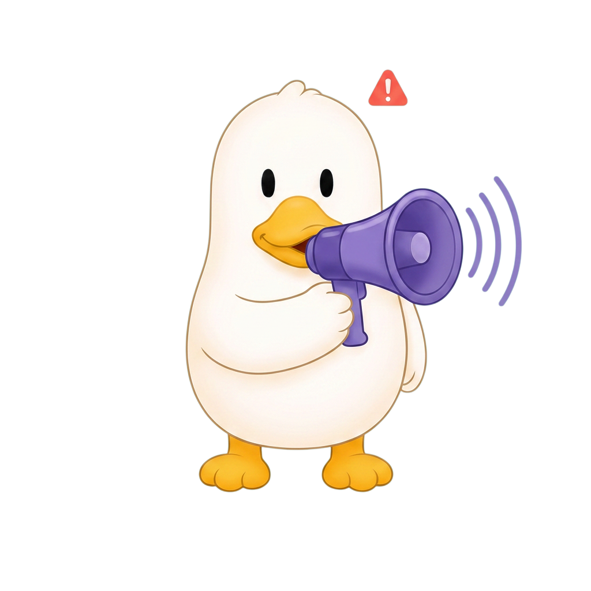
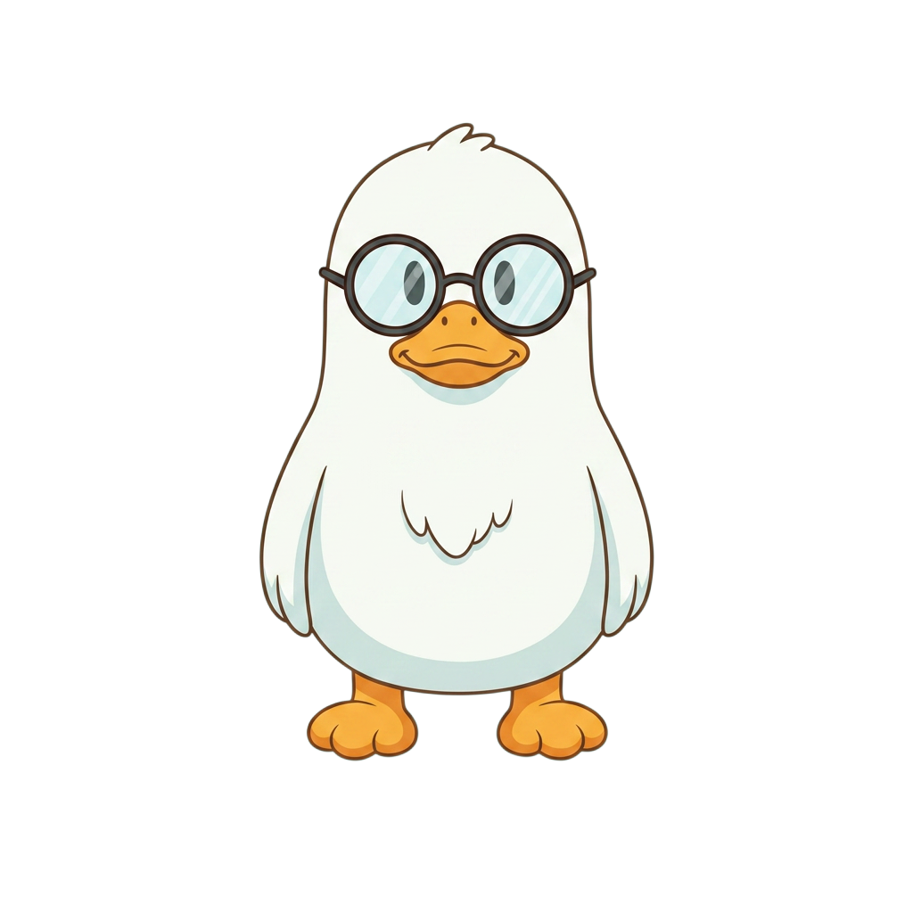
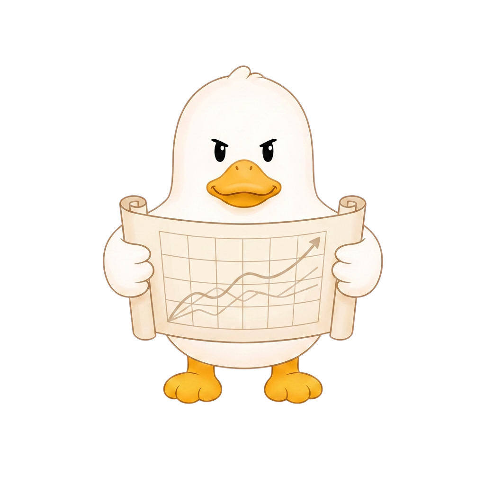

Cuak — Your emotional financial companion
Most people feel their credit is fine — until suddenly it isn't. Cuak is a fintech mascot that reacts to credit health in real time, replacing financial anxiety with actionable clarity before the crisis happens.
Most people feel their credit is fine — until suddenly it isn't
Bank dashboards show numbers — balance, limit, due date — but never answer the real question: am I okay? That uncertainty creates anxiety instead of action. Cuak makes the warning visible before it becomes a crisis.
The result: silent distress, reactive behavior (paying only the minimum out of fear) and total disconnection from the financial product.
The problem
Banking apps are technically correct but emotionally cold. Users know how much they owe; whether that puts them in a good or bad position stays unanswered, and the uncertainty paralyzes them.
The opportunity
Design an emotional layer on top of financial data. A mascot that carries the warning in its face — a visible, immediate state the user reads in seconds.
A mascot that reacts to your financial behavior
Cuak connects to credit card data via Open Banking (Belvo) and maps user behavior to one of four emotional states. The mascot's state is the primary interface: it occupies the top of the screen and drives everything below it.
Three tabs. Two of them are designed and working:


The three tabs
Home. Current mascot state + billing cycle summary. Users understand their situation in under 3 seconds.
Progress. Financial behavior history, rendered as trends the user can read at a glance.
More. Settings, account connection (manual or Belvo), alerts and notification preferences.
The card deck
Installment calculator — implemented. Opens from the front card. The user enters an amount and number of installments with a vertical sliding selector, and it calculates in real time: monthly payment, total paid, total interest and amortization table. It uses the card's real rate or estimates from usage level, and blocks the calculation if the amount exceeds available credit.
Gestures on the UI thread. react-native-gesture-handler + Reanimated. Swiping down changes the front card and the calculator reveals below the deck without interrupting the gesture — animations run off the JS thread, so no frames drop.
The principle underneath all three: the emotional state carries the warning. If Cuak is worried, the user feels it before reading a single number.
Four states. One clear signal.
The system maps the user's financial behavior to four emotional states. Each state has a visual expression, a color and a suggested action — reducing the cognitive friction of interpreting financial data.





Sixty / forty
Balance, used limit, billing date.
The mascot and its state — the signal read first.
The ratio is fixed; the axis follows the surface. On the full screen the state sits above the data; on the 2×2 and 4×2 home widgets it sits beside it — same split, rotated.
Cuak advises you before you spend
Banking apps tell you what you already spent. Cuak shows you what you should do before making the decision. The Purchase Simulator is the product's flagship feature.
The user enters the amount of a future purchase — a TV, a trip. The backend engine (cycle_service.py) analyzes the billing cycle and responds with the optimal strategy.


Buy today, or wait one day
Interest-free. Cuak is happy — enough time to pay at no cost.
Interest-free, but a full new cycle. Cuak warns you first.
Cuak answers before the decision, not after it. Buying today lands inside the current cycle; one day past the billing date opens a whole new one.
The behavioral loop
If the user makes the smart decision, Cuak rewards them instantly. If they try to overdraw, Cuak switches to Alert state before the mistake happens, so the limit arrives as a face they recognize rather than a figure they have to interpret.
From Apprentice to Credit Master
Good financial decisions generate Experience Points (XP). This positive reinforcement turns debt payment from a stressful chore into a rewarding experience — the same mechanism that gives Duolingo 40M daily active users.


Behavioral Scoring and B2B Lead Generation
Cuak flips the traditional banking model. Instead of charging users for their financial mistakes, Cuak charges banks for their best customers.
Premium plan with unlimited simulations, multi-card analysis and advanced proactive alerts. The free plan includes 1 card and 3 simulations per month.
B2B — The real business
By tracking the user's daily discipline through gamification, Cuak builds a Behavioral Score. A "Credit Master" level user with a consistently happy Cuak is the zero-risk customer banks actively look for.
CPA model: Banks pay an acquisition fee for every behaviorally pre-qualified lead. The internal AI recommends higher-tier financial products at the exact moment of user maturity.
Projections grounded in behavioral design
A 0-to-1 project — no real users yet. No existing fintech product uses a mascot as the primary emotional signal for financial data: Nequi and Greenlight have friendly UX, but no reactive emotional layer. Duolingo proved that anthropomorphism drives retention — Cuak applies that mechanism to personal finance for the first time. The projections start from that gap.
What prototype testing revealed
5 testers. 1 clickable prototype. 1 session each. Before a single line of production code — the behavioral design was validated.
Reported feeling "more in control" with mascot feedback vs. the same raw number shown without it. Higher perceived control = direct proxy for lower churn rate.
Said the mascot made them want to check back — vs. "I'd open it once and forget." This is the DAU signal: the emotional layer creates return intent before habit forms.
It feels like the app is on my side, not judging me.
— Prototype tester, session 3
Small sample. Real signal. Industry data backs the direction: gamification improves retention up to 30% (Deloitte). This prototype suggests the mechanism works — at scale, those numbers become revenue.
Built to scale with Open Banking
The stack was chosen to support future integration with banking data. The MVP currently runs on a custom backend calculation engine and mock data to validate the user experience and the behavioral design. The architecture is ready to swap those mocks for the real connection in the next phase.
BelvoWidget integrated in the app.
Sandbox phase
- Expo SDK 52
- React Native 0.76
- TypeScript
- Expo Router
- Zustand
- TanStack Query
- Gesture Handler
- Reanimated
- useSharedValue
- withSpring
- FastAPI
- SQLAlchemy async
- Pydantic
- Alembic
- APScheduler
- PostgreSQL
- Redis
- Docker Compose
- pnpm workspaces
- Figma
- Expo Secure Store
From MVP to Production Integration
The emotional state system is designed and the simulator's core flow works in isolation. The next strategic steps are:
-
Mock data to Open Banking
Finish sandbox testing and connect the Belvo API in production — real-time ingestion and sync of the user's transactions.
-
Testing with real users
Measure whether the emotional signal actually curbs impulsive purchases against real banking data, not mocks.
-
Deploying the emotional scoring
Turn validated behavior into a B2B data layer banks and financial institutions can buy.
Further out: a sponsored rewards marketplace. The XP economy becomes tangible — Credit Master users redeem points with partner banks and merchants for cinema tickets, restaurants, in-store discounts. The difference from a traditional points programme is what earns them: disciplined financial behavior, not spending volume. The partner reaches a user with verified credit health at minimal acquisition cost.
The visual system behind Cuak
Every emotional state, color and component is codified into a reusable system — palette built for emotional clarity, the 60/40 zoning model, and a full UI kit.


Before it reports anything
These are the only two screens where Cuak appears with no number attached — no balance, no state colour, no verdict. The order is deliberate: the user has to read the duck as a companion before it starts telling them things they would rather not hear.
One primary action, four screens. The purple behind Continue is #6C43DA — the same value that carries Wait and earn +50 XP in the simulator and the add button on the card deck. Wordmark, cream surface and type scale carry over untouched. The first screen is already the system, not a splash built for it.
Building a fintech product that needs to feel human?
The emotional system behind Cuak can adapt to any financial or complex-data product. Let's talk.
Email me →